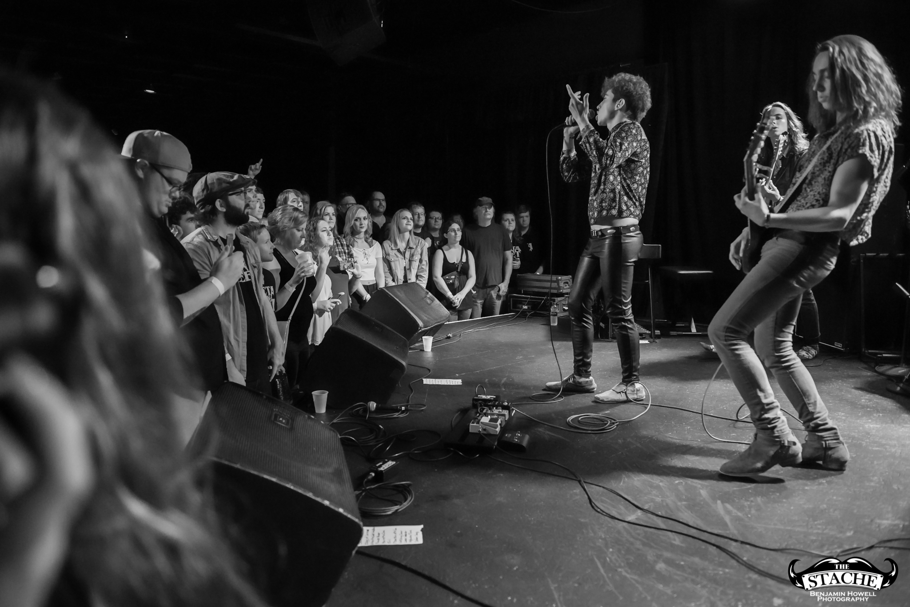
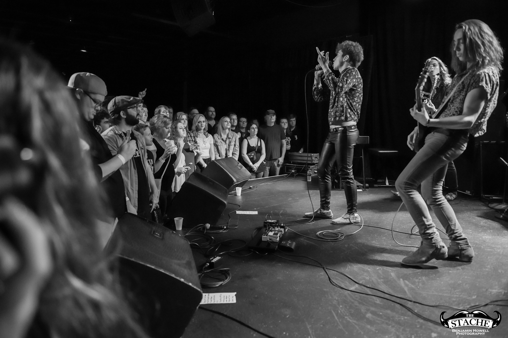

Greta Van Fleet
"Es gibt diese neue Band Greta Van Fleet – sie sind 18, 19 Jahre alt und klingen exakt wie Led Zeppelin. Scheiße, sie verstehen es!", schwärmt der ehemalige Dream Theater-Drummer Mike Portnoy 2017 im Interview. Wenig später gewinnt besagte Band bei den Loudwire Music Awards den Preis als Best New Artist. Zwei der Musiker sind zu diesem Zeitpunkt – sorry, Mike! – sogar erst 17 Jahre alt. In Frankenmuth in Michigan jammen 2012 zunächst die Schulfreunde Kyle Hauck (Schlagzeug) und Jake Kiszka (Gitarre) zusammen. Wenig später stößt Jakes damals 15-jähriger Zwilling Josh als Sänger dazu, als Bassist rekrutieren sie den drei Jahre jüngeren Bruder Sam. Den Bandnamen stibitzen sie von einer in der Kleinstadt ansässigen Musikerin namens Gretna Van Fleet. Der Legende nach erhält die in den Anfangstagen vor gebuchten Konzerten öfter verwirrte Anrufe, ob sie denn auftrete. Trotzdem gibt die Dame den Jungspunden ihren Segen. Kyle Hauck verabschiedet sich bereits im Oktober 2013 aus zeitlichen Gründen, spielt zuvor aber noch drei Songs ein, darunter der später gern als Gig-Opener verwendete "Highway Tune". Das Stück beschert der Band in einer 2017 veröffentlichten Version ihren ersten Nummer-eins-Hit in den US-amerikanischen Mainstream-Rock-Charts. Für Hauck kommt Danny Wagner, vier Monate später nehmen Greta Van Fleet bei einem Konzert in Detroit ihre erste EP auf: "Greta Van Fleet: Live in Detroit". Chevrolet entdeckt den Song "Standing On" und verwendet ihn prompt für eine Werbekampagne des "Equinox"-Modells. Nachdem zwischenzeitlich auch das reichweitenstarke Fernseh-Network Showtime einen Song abgegriffen hat, nimmt die Karriere Greta Van Fleets im Frühjahr 2017 richtig Fahrt auf. Im April veröffentlichen sie die Debüt-EP "Black Smoke Rising", die Lead-Single "Highway Tune" dominiert im September die Rock-Charts, mit der zweiten Single "Safari Song" klettern sie immerhin bis auf Platz zwei.
 
